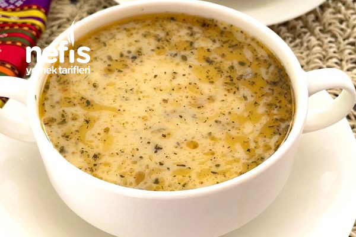

Anadolu Çorbası

Anadolu çorbası geleneksel
Malzemeler
- 2 yemek kaşığı kırmızı mercimek
- 3 yemek kaşığı yeşil mercimek
- 2yemek kaşığı pirinç̧
- 2 yemek kaşığı bulgur
- 1,5 lt su
- Bakliyatlarımızı yıkayıp, tencereye alalım. Suyunu ilave edip yumuşamaya bırakalım.
- Benim yeşil mercimeğim dondurucuda haşlanmış olduğu için sonradan ekledim. Yumuşayan bakliyatlarımıza terbiyesi hazırlanır.
- Yoğurt, yumurta ve unu pürüz kalmayacak şekilde çırpalım. Kaynayan tencereden 1 kepçe alıp terbiyeyle karıştıralım. Hızlıca çırpalım. Ardından tenceremize ilave edip, kaynayana kadar karıştıralım.
- Sosu için tavaya yağı alalım. Küp küp doğranmış soğanı ilave edip pembeleşsene kadar kavuralım.
- Baharatları ilave edip 2 dakika kızdırıp, tencereye ekleyelim. Sıcak servis edelim. Afiyet olsun.